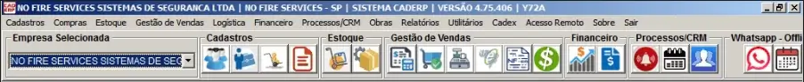
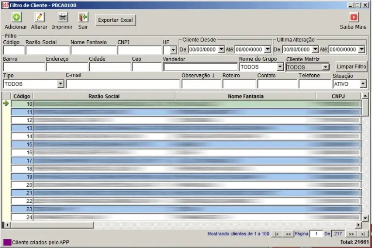
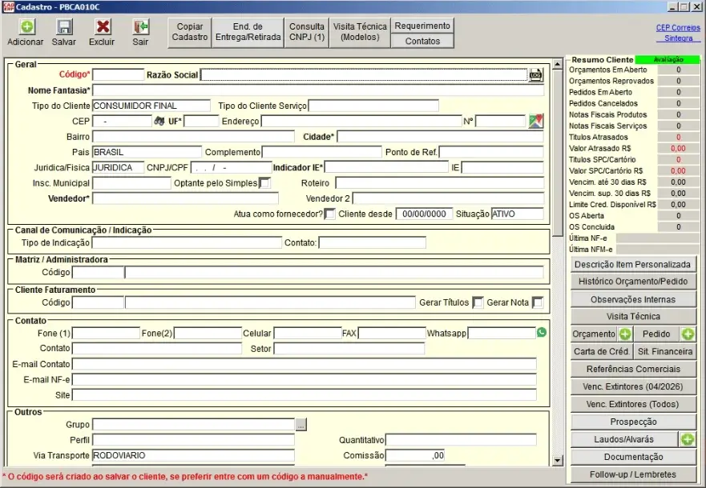
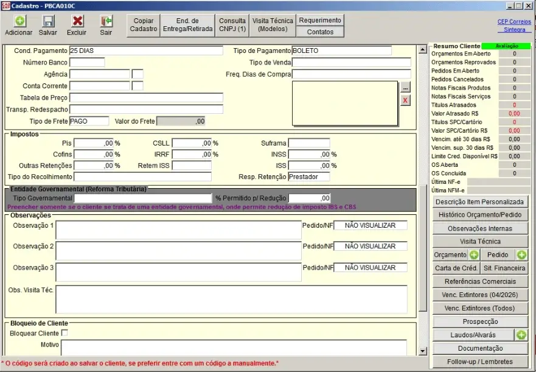
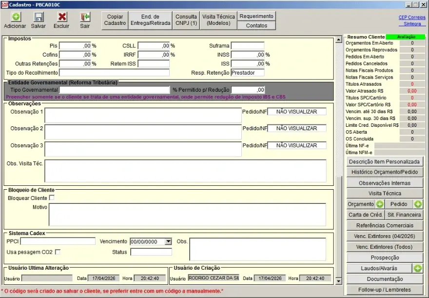

Objetivo da aula
Orientar o usuário quanto ao acesso, à consulta, à inclusão e à atualização de clientes no CAD ERP, estabelecendo um padrão operacional mínimo para proteger a consistência da base cadastral da No Fire.
Cadastro de cliente não é tarefa administrativa simples. É base estrutural da operação.
Por que o cadastro de clientes é crítico
O cadastro do cliente não serve apenas para “abrir um orçamento”. Ele influencia toda a cadeia operacional da empresa. Um cadastro incorreto, incompleto ou duplicado compromete a confiabilidade das informações e gera problemas que se espalham para outras etapas do processo.
A base de clientes será utilizada, de forma direta ou indireta, por múltiplos setores da empresa. Por isso, o padrão de preenchimento não é opcional.
- Impacta a emissão e organização de orçamentos
- Impacta a rastreabilidade do histórico comercial
- Impacta processos financeiros, fiscais e operacionais
- Impacta futuras consultas, filtros e relatórios
Um cliente mal cadastrado não gera um erro localizado. Gera desorganização sistêmica.
Acesso ao cadastro de clientes
O acesso ao cadastro de clientes é feito a partir do ambiente principal do sistema, utilizando os botões de cadastro disponíveis no menu superior.
Menu principal do sistema

Ambiente principal do sistema CAD ERP, com destaque para a área de acesso aos cadastros.
A partir do menu principal, o usuário acessa o filtro de clientes, que funciona como ponto de entrada para pesquisa, inclusão e alteração cadastral.
Filtro de clientes: o ponto de partida obrigatório
O filtro de clientes é a primeira tela que deve ser utilizada antes de qualquer inclusão. Ele existe para permitir a localização de clientes já cadastrados e evitar duplicidade de registros.
Tela de filtro de clientes

Tela de filtro de clientes, com campos de busca e botões de inclusão, alteração, impressão e saída.
Nessa tela, o usuário pode:
- Pesquisar clientes já existentes
- Filtrar por código, razão social, nome fantasia, CNPJ, cidade, vendedor e outros critérios
- Abrir um cadastro existente para conferência ou alteração
- Iniciar a inclusão de um novo cliente
Regra obrigatória: nunca iniciar um novo cadastro sem antes pesquisar o cliente no filtro.
Regra crítica: não pode haver cadastro duplicado
O sistema permite cadastro duplicado. Mesmo quando já existe um CNPJ vinculado a outro cliente, o sistema pode apenas alertar e ainda assim permitir a continuidade da inclusão.
Isso significa que o controle de duplicidade não será garantido automaticamente pelo sistema. Ele depende do comportamento do usuário.
Regra operacional da No Fire: é proibido cadastrar clientes duplicados.
Procedimento obrigatório antes de incluir
- Pesquisar por CNPJ ou CPF
- Pesquisar por razão social
- Pesquisar por nome fantasia, quando aplicável
- Em caso de dúvida, validar antes de criar um novo registro
Por que isso importa
- Evita histórico comercial fragmentado
- Evita orçamentos espalhados em registros diferentes
- Evita problemas financeiros e fiscais futuros
- Evita confusão operacional na consulta do cliente
Inclusão e alteração de cadastro
A partir da tela de filtro, o usuário poderá optar por incluir um novo cliente ou alterar um cadastro já existente. Essas duas ações exigem o mesmo nível de cuidado, porque ambas impactam diretamente a integridade da base.
Incluir um novo cliente sem pesquisar antes é erro. Alterar o cliente errado também é erro. Em ambos os casos, o problema não aparece apenas na tela: ele contamina a operação.
Tela de cadastro — visão geral
A tela de cadastro reúne os dados principais do cliente em blocos distintos. O usuário deve entender que nem todo campo tem o mesmo peso operacional, mas alguns são críticos na prática e precisam de atenção obrigatória.
Cadastro de clientes — bloco principal

Primeira parte da tela de cadastro, com dados principais, localização, contatos e classificação básica.
Cadastro de clientes — bloco complementar

Segunda parte da tela de cadastro, com condições comerciais, observações, bloqueios e informações adicionais.
Cadastro de clientes — visão adicional

Visão complementar do cadastro, incluindo áreas de observação, bloqueio e rastreabilidade de criação/alteração.
Campos principais: o que merece atenção obrigatória
Razão Social
Deve ser preenchida com o nome completo do cliente, sem improvisos, sem apelidos e sem abreviações desnecessárias. É um campo de referência principal da base.
Nome Fantasia
Deve ser preenchido quando houver aplicação prática. Ajuda na localização do cliente e evita confusões em empresas conhecidas comercialmente por nome diferente da razão social.
CNPJ / CPF
É campo crítico. O sistema valida a estrutura da informação, mas isso não elimina o risco de preenchimento coerente na forma e incorreto no conteúdo. O usuário deve conferir antes de salvar.
Endereço, Cidade e UF
Devem ser preenchidos com atenção. São informações estruturais de localização e não devem ser tratadas como secundárias.
Contatos
Telefones, celular, e-mail e contato responsável devem ser preenchidos sempre que disponíveis. Cadastro sem contato enfraquece a utilidade operacional do registro.
Na prática, um cadastro não é considerado bom apenas porque “foi salvo”. Ele precisa estar utilizável.
Validação do CNPJ/CPF: cuidado com falsa segurança
O sistema possui validação estrutural para CNPJ/CPF e não permite determinadas entradas incorretas. Isso é positivo, mas não pode gerar falsa sensação de segurança.
Se a informação seguir uma lógica formal aceitável, mesmo que não represente um dado real confiável, o sistema pode aceitar o registro. Além disso, a duplicidade continua possível.
O sistema ajuda, mas não substitui a conferência humana.
Padrão mínimo de preenchimento
Como base inicial de operação, adota-se o seguinte padrão mínimo para cadastro de clientes:
- Utilizar caixa alta, seguindo o padrão visual do sistema
- Não usar abreviações sem necessidade
- Não preencher campos com “lixo operacional” ou observações aleatórias
- Manter coerência entre razão social, nome fantasia e documento
- Preencher contatos sempre que a informação estiver disponível
- Não deixar campos críticos em branco por pressa
Padrão não existe para “deixar bonito”. Existe para permitir consulta, leitura, conferência e continuidade operacional.
Observações e campos adicionais
A tela possui campos adicionais de observação, contato, bloqueio e dados complementares. Esses campos não devem ser usados como “depósito de informação solta”.
O preenchimento de observações deve obedecer critério, objetividade e utilidade operacional. Informação vaga, redundante ou mal posicionada atrapalha o uso futuro do cadastro.
Erro operacional clássico: pressa
A maior ameaça ao cadastro de clientes não é complexidade técnica. É a pressa.
Cadastrar sem pesquisar, preencher sem conferir, salvar sem validar ou alterar sem ter certeza são comportamentos típicos de ambiente sem padrão. Este treinamento existe justamente para bloquear isso.
- Pressa gera duplicidade
- Pressa gera cadastro incompleto
- Pressa gera alteração indevida
- Pressa gera retrabalho futuro
O que não deve acontecer
- Incluir cliente sem pesquisa prévia
- Ignorar alerta de possível duplicidade
- Salvar cadastro com campos críticos incompletos
- Preencher nomes de forma abreviada ou inconsistente
- Alterar cadastro existente sem certeza de que é o registro correto
- Assumir que o sistema “resolve sozinho” a consistência da base
Resultado esperado desta aula
Ao final desta aula, o usuário deve ser capaz de:
- acessar corretamente o filtro de clientes;
- realizar a pesquisa antes de incluir;
- compreender que duplicidade é proibida, mesmo que o sistema permita;
- identificar os campos mais críticos do cadastro;
- preencher o cliente com padrão mínimo e responsabilidade operacional.
Próximo passo
Compreendido o cadastro de clientes, o próximo passo é avançar para a lógica de itens: como localizar, reconhecer e utilizar corretamente o item certo dentro do sistema.